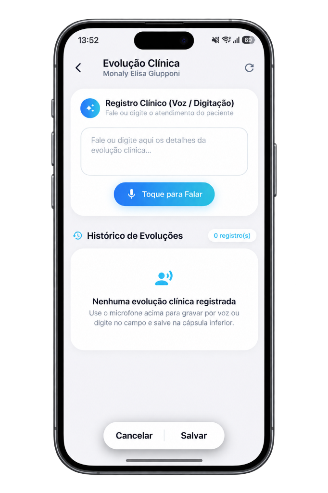
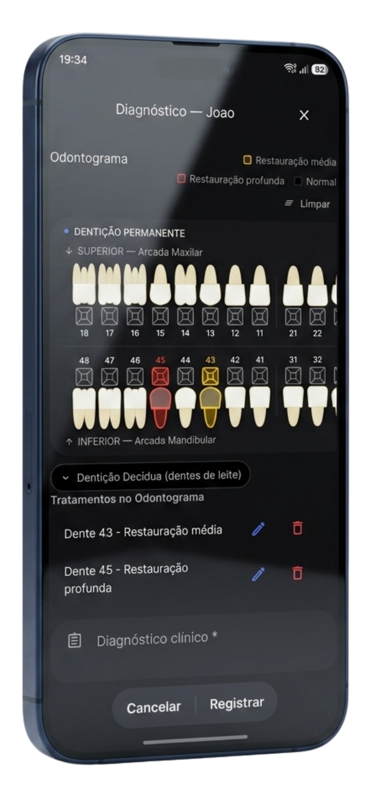
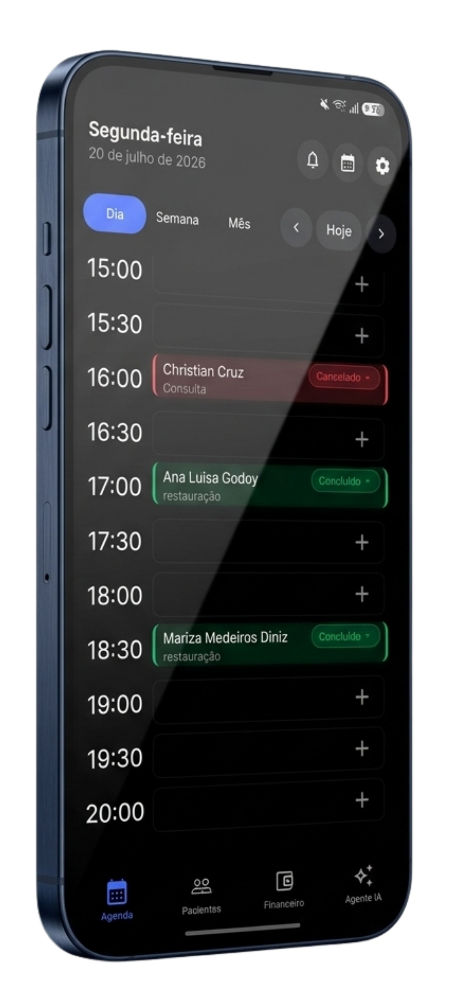
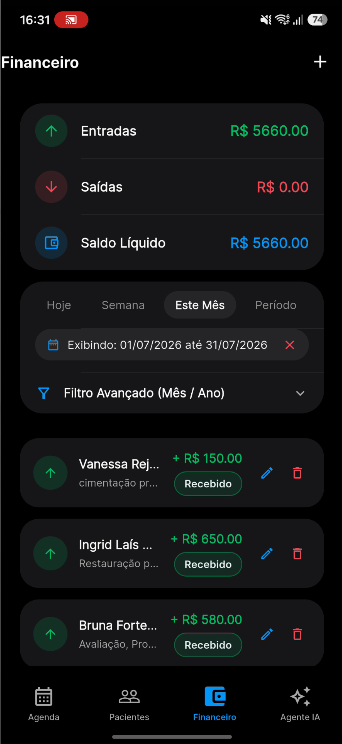

Sem Lyra
Rotina manual, lenta e difícil de controlar
- Prontuário fica para depois no fim do dia.
- Recepção depende de mensagens e confirmações manuais.
- Financeiro espalhado em planilhas e cobranças esquecidas.
O Lyra conecta IA por voz, automações no WhatsApp, agenda inteligente, prontuário digital, odontograma e financeiro para reduzir tarefas operacionais e permitir que o dentista foque no que realmente importa: seus pacientes.
O Lyra foi desenvolvido para simplificar a rotina da clínica, reduzir o trabalho manual da recepção e ajudar você a aproveitar melhor as oportunidades de faturamento.
Entre uma consulta e outra, o dentista só fala o procedimento realizado. A IA transforma a fala em evolução clínica formatada, organizada e pronta para revisão.

O Lyra ajuda a reduzir faltas, responder dúvidas, enviar cobranças, pedir avaliações e manter o relacionamento funcionando inclusive fora do expediente.
Marque faces, acompanhe histórico clínico, visualize anexos e apresente planos de tratamento com clareza para aumentar aprovação.

Agenda, múltiplos profissionais, financeiro e Google Calendar sincronizados em tempo real.

Visualize compromissos por dia, semana ou mês e sincronize tudo com o Google Calendar.

Acompanhe faturamento, recebimentos, valores a receber, despesas e relatórios em um único lugar.
| Rotina | Papel, Excel e WhatsApp manual | Sistemas comuns | Lyra Odonto |
|---|---|---|---|
| Evolução clínica | Digitada depois da consulta | Campo de texto comum | Por voz com IA e revisão rápida |
| Recepção envia tudo manualmente | Lembretes limitados | Automação 24/7, cobrança e avaliações | |
| Documentos | Impressão, pasta e assinatura física | Assinatura paga à parte | Nativo, digital e organizado no prontuário |
| Odontograma | Desenho ou ficha estática | Visual básico | Interativo, por faces e conectado ao orçamento |
| Financeiro | Planilhas separadas | Relatórios confusos | Caixa, DRE e inadimplência em tempo real |
Teste grátispor 7 dias
Não. Ele pode falar o procedimento no microfone do celular e revisar a evolução gerada pela IA antes de salvar.
Sim. O Lyra automatiza fluxos de confirmação, lembretes, cobrança, aniversário e pós-atendimento conforme a configuração da clínica.
Sim. A agenda foi pensada para múltiplos profissionais, salas e visualizações por dia, semana ou mês.
O Lyra organiza prontuários, fotos, exames e documentos em nuvem com controle de acesso e práticas alinhadas à LGPD.
Sim. A experiência é responsiva para Android, iOS, tablets e desktop.
Comece o teste grátis e veja como IA, WhatsApp e gestão integrada mudam a rotina da clínica.
Testar o Lyra agora